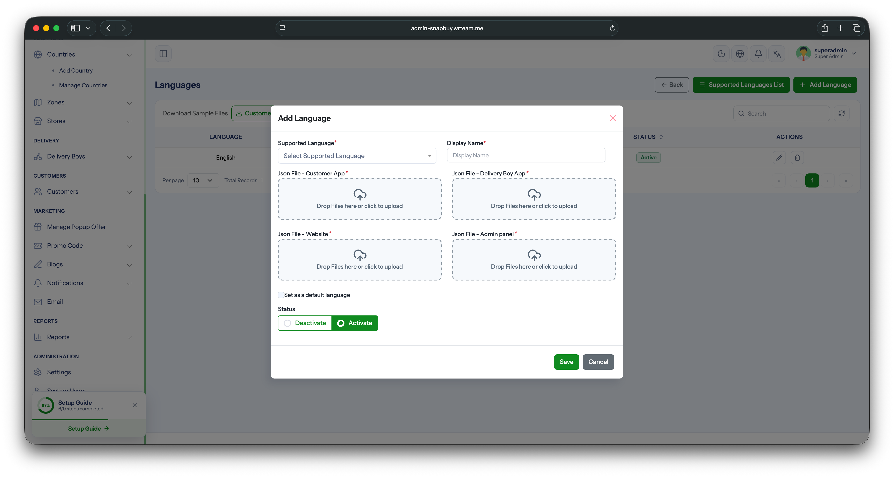
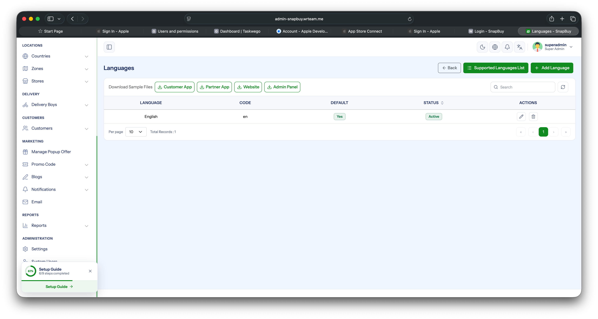
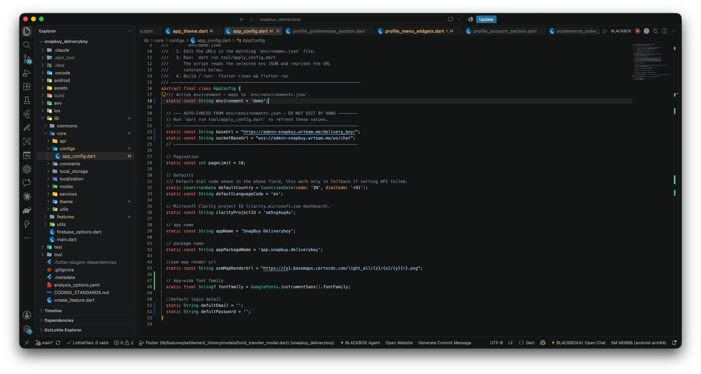

Manage Languages
Add new languages, switch the default language, and configure the in-app fallback used when the language API can't be reached.
1. Add a New Language
- Log in to your Admin Panel.
- Navigate to Settings → General → Languages.
- Download the sample translation file for each platform (App, Web, Admin Panel) from the form.
- Open the downloaded file and translate only the values in the
key: valuepairs. Do not change the keys — the app looks them up by key, so any change will break the lookup. - Once translated, return to the Add Language form, fill in the language name and code, upload the translated file(s), then save.

WARNING
Edit only the right-hand side of each key: value pair. Changing, removing, or adding keys will cause missing strings in the app.
2. Change the Default Language
- Stay on the Settings → General → Languages tab.
- Scroll to the language list below the form.
- Find the language you want as default and click the Set Default button next to it.

The app will pick this language on first launch for users.
3. Fallback Default in App Code
As a safety net, a default language code is hardcoded in the app's config file. This value is only used when the settings API call fails (e.g., no internet on first launch).
- Open
lib/core/configs/app_config.dart. - Update the default language constant to the language code you want as fallback.

INFO
The admin-panel default (Step 2) is the primary source of truth. The app_config.dart value (Step 3) is only a fallback for offline / API-failure scenarios.